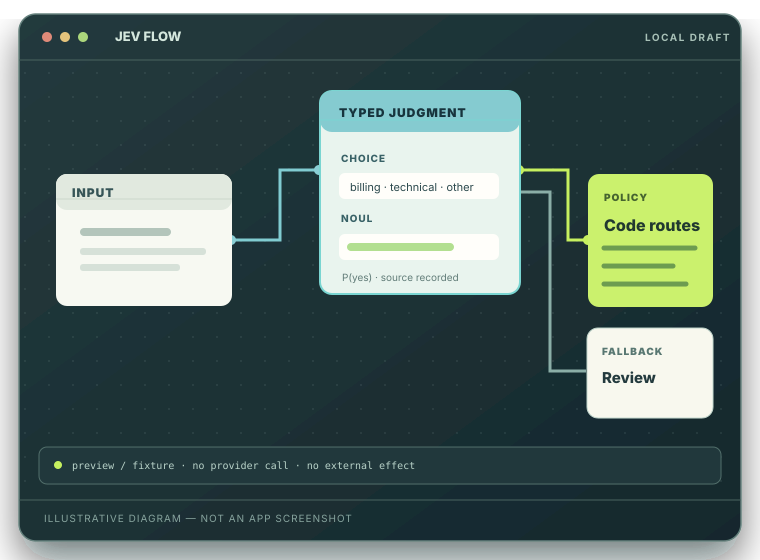
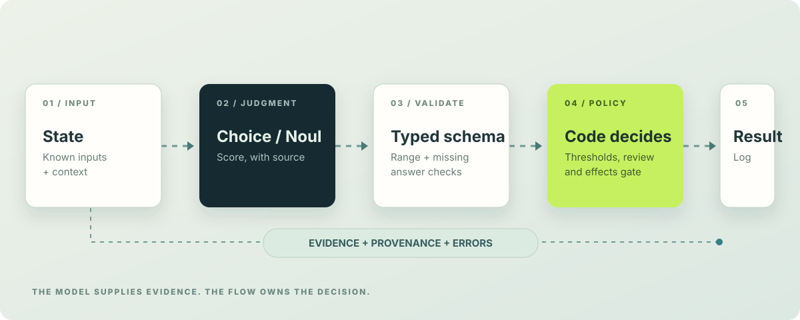
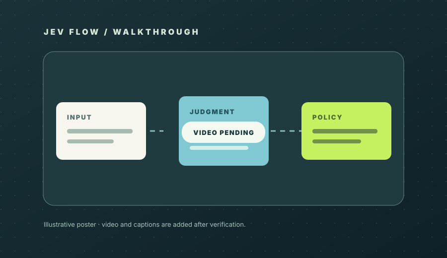

Typed by default
Questions return bounded Choice, Noul, or Score values instead of free-form instructions.
A studio for typed AI workflows
Compose Choice, Noul, and Score judgments into workflows you can read, test, and govern. Every branch stays explicit. Every run tells you where its evidence came from.
This static website is a guide. The Studio and provider calls run in your local Node app.

Questions return bounded Choice, Noul, or Score values instead of free-form instructions.
Your flow validates outputs, applies thresholds, and chooses branches. Model output is evidence, never authority.
Preview, fixture, local inference, and remote calls are labeled separately, with errors and usage shown when available.
THE REAL STUDIO
This capture comes from the standalone app. The visible example uses a deterministic fixture; it is not a remote Jev call.

THE SYSTEM
JEV Flow separates uncertain interpretation from deterministic policy. You can inspect both sides of that boundary.

Ask a bounded question against the input. Noul reports a probability of yes, Choice selects a category, and Score maps an ordinal scale.
Schema and range checks reject missing or malformed answers. Your flow then applies its thresholds and review paths.
Read the question, answer, branch, model or fixture source, latency, and reported usage. Unknown cost stays unknown.
FROM IDEA TO RUN
Use fixtures to understand logic first. Turn on a provider only when you are ready to measure a real judgment.
Describe input fields and the question the model is allowed to judge.
Connect judgments, validation, conditions, logs, and conservative review branches.
Run synthetic fixtures. A preview is deterministic and is never presented as a live Jev call.
Explicitly select a configured provider, then compare typed answers with the branch your code took.
LAZY CATALOG
Catalog entries combine patterns, domains, variants, thresholds, complexity, and focus. They are generated configurations, not separately written flow files or individually tested model calls.
How certification worksRun the isolated catalog certificate before publishing a verified count.
388,080 is the source catalog's reported generated total. This site promotes it to a verified standalone total only after a fresh certificate checks valid flows, unique keys, unique IDs, and source fingerprint.
MAKE IT YOURS
These generic examples use synthetic inputs. They do not encode your support policy, abuse rules, anomaly threshold, or refund entitlement.
Edit the JSON, inspect its structure, or download your draft. This page never calls a model or runs effects.
Select an example to begin.
READ THE LABEL
A deterministic preview can prove flow logic. Only an observed provider response can tell you how that provider answered.
Uses supplied synthetic answers. No model call, provider latency, or remote cost is implied.
Runs only when a compatible local adapter and checkpoint are configured. The selected model and calibration state must be visible.
An explicit live run uses your runtime credential. Report model, measured latency, and provider usage when returned.
Missing keys, malformed answers, timeouts, and failed calls surface as errors. They never become a successful action.
RUN IT YOURSELF
The website is static; the Studio runs from this repository with Node. Start without a credential to explore fixtures and deterministic previews. Add a provider credential only for explicit live calls.
git clone https://github.com/daltonrpj/jev-flow.git
cd jev-flow
npm ci
npm run catalog:certify
npm startThe static guide is public. The local application stores user data outside this checkout and does not require a provider key for deterministic previews.
After starting the app, open the local Studio route: /jev/flows
WALKTHROUGH
The planned English walkthrough covers local setup, a typed question, a fixture preview, an explicit live run, and the evidence log. When published, its narration and captions will be labeled Gemini TTS.
The verified video asset is not included yet. The player appears only after the file is present.
Read the transcript ↗
GOOD QUESTIONS
No. Preview uses deterministic fixtures and proves only how the workflow handles those supplied answers.
No. The source catalog combines six dimensions lazily. The standalone count appears as verified only after this checkout passes a fresh certificate for valid configurations and unique IDs and keys.
No. A typed answer is evidence. Validation, policy gates, review paths, and authorization for effects belong to code.
No. Pages hosts this guide and media. Run the Node application locally on your machine.